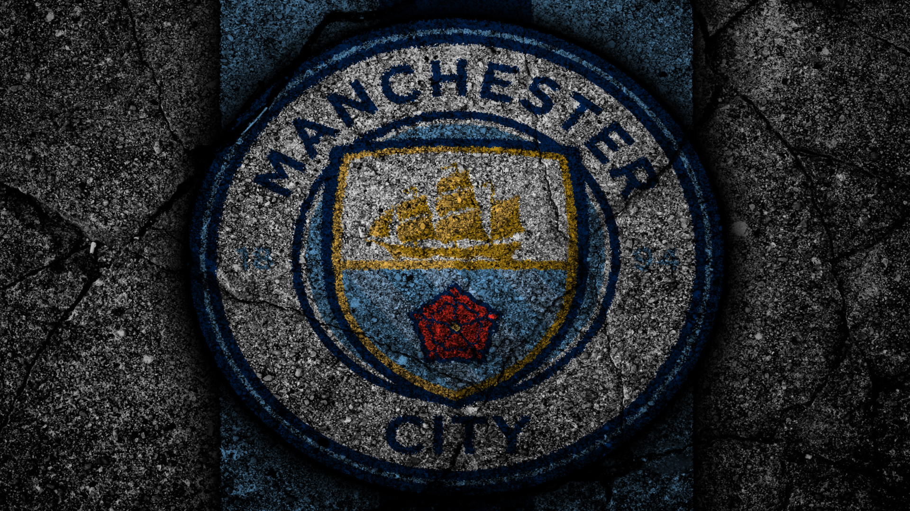

Manchester City
Rise Of The Blue Moon

Much like their Mancunian rivals, Manchester City have seen many highs during their colorful existence. With First Division/Premier League titles, FA Cups, League Cups and one Cup Winners' Cup, City stand tall as one of the most successful English football clubs of all time. Still, their history contains more than enough lows to even it up; for example, City are still the only English champions to be relegated the very next season.
Manchester City FC timeline
- 1880 - The club is established (named as St. Mark's).
- 1887 - The club is renamed as Ardwick AFC.
- 1887 - The club move to the Hyde Park stadium.
- 1892 - Division 2 is established with Ardwick AFC as a founding member.
- 1893 - The Canadian Walter Bowman become the first foreign player to play for City and also in the Football League.
- 1894 - The club is renamed as Manchester City.
- 1896 - First FA Cup participation.
- 1899 - The team is promoted to Division 1 for the first time.
- 1904 - Winning their first tournament trophy (FA Cup).
- 1923 - MCFC move to the Main Road stadium.
- 1937 - First time Division 1 champions.
- 1965 - A new logo is adopted.
- 1970 - Winning their first European competition (Cup Winners' Cup).
- 1979 - Steve Daley become the first player transferred to the club for a fee over £1 million (£1,450,277).
- 1997 - A new logo is adopted.
- 2008 - The Abu Dhabi United Group become the new owner of the club.
- 2014 - Winning their first British Double (the League and the League Cup).
In last decade City have been crowned as Premier League champions six times.Want to know more? Read Here